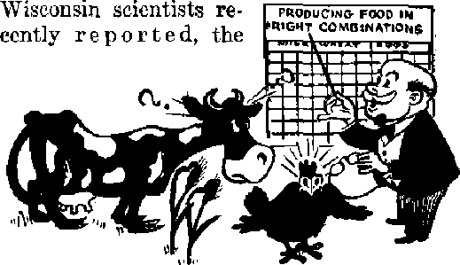

Clergy lies and priest-led mobs fail to halt preaching
Wherein does it honor God or Christ J
The story of the Panama Canal
Your Eating Habits Do they lead you to health ? Or hurry you to the grave ?
DECEMBER 22, 1948 semimonthly
THE MISSION OF THIS JOURNAL
News sources thit are able io keep you awake to the vital'Imu^s of cur limes must be unfettered by censorship and selfish interests. “Awuhf has no fetters* It recogniso foots, faces facts, is free to publish facts. It is not bound by political ambitions or obligations; it is unhampered by advertisers whose toes must not be trodden on; it is unprejudiced by traditional’creeds. Thia journal keeps itself free that it may speak freely to you, Birt it does not abuse Its freedom. It main tains integrity to truth.
"Awake t’* uses the regular news chtnmels, but is not dependent on them. I's own correspondents are on all continents,, in scores u£*nnlipns1 From the four corners of the earth their unecnsoi'cd, on*-the-scene? reports come io you through these coluxuTifi, This journal’s viewpoint is not narrow, but is international. It is read in many nations, in many langua^ti’, by persons of all ages* Through its pages many fields of knowledge pass in review—-government, commerce, religion, history, geography, floience, social coiulitions, natural wonders—why, its coverage is as broad as the earth and aS high as the heavens.
"Awake I” pledges Itsdf to righteous principles, to exposing hidden foes and subtle dangers, to championing freedom for all, to coml'otiing mourners and strengthening those disheartened by the failures of a delinquent world, reflecting sure hope for the crtublwluiient of a righteous New World.
Get acquainted with wAwakel” Keep awake by reading 11 Awake!"
ruillJRWFTj SJtMIMOKTHLT Di
WATCHTOWER BH3L1& AND TRACT SOCIKT?, TNG.
117 Adams Sirent
N. II. Ktornt, PrtJWcst
Five cent* a copy
RralltaiiHi ahcmld ts sent to oHlct Id- tout tsua-tjy 111 ClWplla&H fflth nscuUUuUH to RUScultO fill'll ijtjnor? cf Wiry. BalulLIaocn »rj uttflWi it Eiuuilin from ^cnir.trlm wlmro OCr efltCp kj lOi'ati'O, by jntortaMonn] mimey urJtr onlT. CuhKrtBtLin Calis 13 dlffyrcno niuolrlui ICS Jwrt stlted in irr?»l Curran?.
Motlw rf laplrallotl (vJUi HtHvU tJad) If Wt at UnU ton Luuai baftn pi^rtjrkm ctjIwu
Brooklyn 1, N.Y., U. S, A.
QlLLtfT SurXJiU, ^cnri'XiN-y Dti-a dollar a yaar
(FiaafO tff tMriU v.lnU mtiL to OUT dttlco miy tz-fijwnliMl dteullre wtUiia Wrt PWHE Jjenif J a Ur dJi in will ii inw MMreta,
lyi’ffl Yuirlv •Hlissnotlflo DM»
/urlta. D.fl., 11T lilaOi Hu, ItCWlrlyu 1. N. Y. $1
■" — ’ ' -......*..... di
i-Elrilla, I TtcnssF-onJ Kd.. airiLhfldrt, 2<:J TV. Cgoaiai dfj IrrJli Aftu, lorcqito 5, On'-ido EftflMlj 34 Criren Turret, 10 Id Ki, K 0 iQlfttL AlrlA. 423 IK-tfOt. ncnw, Cijr Tnon
SI 54 Co
fcatttd u atr-rn111-ulias miliar 4t DwWftt. ft ?*. A* iif Marifi 3, Ltfr$, PrtSMd Jtt V R- A.
CONTENTS
Jchovflh'A witnesses ui Poland
The Church1?- Ccnrsp During the War
Petition ui Juhuvuh’s witn**= i=es
Falsa Charge! of Cummuuht Bac-lviTiE;
Thh CumincTc-ixl Jtaekct Called Chriatmus 9
Lnhking Behind the "Charity1' MhkJt
“Distress of Nat.inriA, with Perplexity’’
Atnnite Energy on Mount Carmel
"Thy Word Is Truth"
Why a Heavenly Son Was Born as a Man 25 CcnsoTfilrip Fells Bambi and CurdimJ 27 Watching the World
®^Now it is high time to awake.— Romans 13:119)
Volume XXIX Brooklyn, N, Y,, December 22, 1948 Number 24
JEHOVAH’S WITNESSES IN POLAND DEFEAT PERSECUTION
MUCH has been said over the radio and published in various newspapers and magazines about the government and religion in Poland. Oftentimes some of these reports have been distorted so as to cover up the truth and lead the readers into forming an unfavorable opinion of certain individuals or groups. Two Awake! correspondents who have been traveling throughout Poland for over a year and a half hope to give you a true inside picture of conditions as they actually exist in this land.
The Catholic Chronicle of Toledo, Ohio, contained an article in its February 27, 1948, issue, entitled, “Pole Reds Finance ‘ Jehovah’1 Agents/’ It goes on to say, which we qote in part:
Warsaw—The atheist government of Po-land is financing sects like the Jehovah's witnesses in an effort to destroy the Catholicity of the people. “Watchtower’ salesmen are making the rounds of homes with pamphlets reviling the Church, Sunday lectures also are Organized, denouncing Catholicism and glorifying communism. . . . Next they plead for conversions. Finally they offer cash inducements for joining. These bribes are disguised as “charity”.
At the very outset, all sensible thinking Poles inside Poland will readily agree that the Catholic Church is not being p&rsecuted nor are her privileges being taken away from her. Poland is over 90 percent Catholic, and the govern-DEGEMBER 22, IMS ment recognizes her strong influence in all spheres of life and so grants her full freedom of operation. Although the 1925 Papal Concordat has been dissolved, great liberalism and freedom have been shown toward the church by the present regime. The true picture of church and state relations was best stated and set forth by President Bierut in his famous interview with Ksawery Pruszynski, well known literate and journalist. He stated in an article entitled “The Government Desires Good Relations with the Church”, as published in the Wieczor Warszawy (Warsaw Evening) of November 24, 1946:
The best concrete evidence that the State desires good relations with the church is the status of the church’s possessions. This status includes private Catholic schools, low, average, and higher grade, with a Catholic Univers i ty which includes th e ological depar t-ments, equipped by the State with full public rights. Further, it embraces the Catholic press which possesses a number of organs. Finally, in schools run by the government, it is a requirement to teach religion by catechists, and this teaching is obligatory provided the parents of a child have no objection to it. We add to this the leaving to the clergy their property, especially farms, and this despite farm reforms. In other countries the first victim of such a reform was usually the church. Monasteries and religious institutions evacuated from the territory outside of the river Bug
were moved by us to new centers in the re gained territories. Our army possesses chaplains j its standards are consecrated by the priests, it begins the day with a religious song at the morning roll call, and Sunday it goes to church. Our radio begins i:s programs with a religious song, and has sermons and church services. We do not believe, sir, you will find this in many countries. And this is happening in a country whose government is stubbornly not recognized'by the Vatican.
As further proof that the church is not being persecuted and her privileges are not being taken away from her, the government has been granting permits for the repairing of demolished Catholic churches throughout certain parts of the land. Sometimes more stress is placed upon repairing these than in renovating demolished homes for the masses of the common people. The following article from the newspaper Robotnik {The Worker/Warsaw) of July'28, 1948, under the heading “Edifying Example” is to the point in this regard:
While wandering among the rubbish heaps around the Vistula, I came across a freshly rebuilt church which was about the only building still standing in this section. No. I’m not an enemy of the church or churches. . . , Only the rebuilding of churches when many of the parishioners yet nest with their whole families in one bed, may not be a social crime but it surely is social untactfulness. , . * I do not contend in the least that the renovation of old churches and the building of new ones should be discontinued altogether, but it seems to me there will be time for this when the last parishioner comes out of his pigpen and lives like a human.
In view7 of the critical housing situation, it is an otitright shame that Anthony Lowihski, parish priest of Saint Waw-rzyn church, Warsaw, managed to cleverly steal the money going toward the rebuilding of his church and use it for his own selfish purposes* In commenting on his actions, Glos Wolnych {Voice of the Free) of Warsaw, dated May 30, 1948, stated:
As stated in the Wieczor of May 23, 1948, the prosecuting authorities drew up an act of impeachment against Anthony Lowihski, the priest of Saint Wawrzyn Church, Warsaw. Priest Lowinski was charged with selling building materials acquired for the church to the free market for considerably higher prices than the commercial prices paid for. He used the money fbr purposes which are in conflict with the dignity of the priest’s profession. He repaired the living quarters of his friend, Jenny Wankc, at 11 Wisniowa Street, which -cost 1,000,000 zlotys ($2,500), and he also bought furniture for her at a cost of 100,000 zlotys. . t t In the course of the investigation, priest Lowihski confessed to selling this state-controlled merchandise.
According to a similar article in the newspaper Zycie Warszawy {Life of Warsaw), priestLowihski was sentenced to three years in jaih
Many in Poland have seen and still remember the hypocritical action of the church during the war when it expressed its sympathy for the Hitler regime and ignored the cruel sufferings of the Polish people. President Bierut in eem-menting on the government's provocations toward the church stated, as quoted in the newspaper Wieczdr Warszawy ( The Warsaw Evening) of November 24, 1946:
The reasons for our provocations toward the church are twofold. The first reason is very unpleasant, but we frankly call this the Vatican's German love. During the war and in the period of the heaviest persecution the Polish nation has ever known, we waited in vain to hear the intervening voice of the Holy See. When this voice was heard, it was only incidental, casual, cautious, not equal to our great sufferings and German crimes. Today, this same voice is heard, but much stronger, in defense of oppressed Germany, even in such cases which but merit little mercy, as the hangman from Wartbegan.
The second source of our provocation is found in certain circles of our own clergy
and their sad tendency to misuse the pulpit for the purpose of carrying on a political war. These facts are always occurring and I judge it is high time the church authorities stop this. These assaults from the pulpit and vestry are a block in the road to peaceful relations between the State and the clergy.
The clergy have always mixed in the politics of nations, Contrary to the Bible teaching, and are willing to make all kinds of agreements to further church aims in their country. It has been reported that at present some Catholic priests in Poland are members of the Polish Communist party, the same as in Czechoslovakia. Many of the parishioners also belong to this party, attend all of its meetings, and carry its standards in certain governmental parades. The Hierarchy is willing to do business with anybody, even the Devil himself, as Pius XI put it.
Mention might here be made of the relations the clergy had with forest bands who plundered and murdered people throughout different parts of Poland. The sadistic priests who led these bandits administered absolution to them to ease their conscience for the killings they committed. The following articles from different sections of Poland -show the activity of the clergy in conducting these terroristic, criminal bands against innocent persons.
Express Ilustroiyany (The Illustrated Express) of December 28, 1946, stated: "The Regional Military Court in Warsaw announced its verdict in the case of the plundering band headed by priest Stefanski. Priest Stefanski and defendant Jaworski were sentenced to death.”
Echo Krakowskie (The Cracow Echo) of November 11, 1946, had this report: “Swiecie—Priest’Konczal stood today before the specially called-in Regional Military Court in Swiecie, Bydgoszcz, charged with helping the faseistic band NSZ and for illegally possessing firearms. Priest Konczal confessed to being guilty but denied that he directly incited DECEMBER S3, 1948
to arms. The court sentenced priest Konczal to five years in jail.”
On this same subject Robotnik (The Worker) of January 9, 1947, wrote, under the heading “Terroristic Priests”:
Not long ago the Warsaw Military Court sentenced priest Jarkiewicz of Kierki to death for organizing a terrorist band and for issuing the death sentence against the 'disobedient’ in his parish. ... A number of cases of this kind are in the course of court procedure. The warehouse of ammunition for priest Jarkiewicz’s band was located in the parish church. In the parish church of Drohiezyn, the safety authorities uncovered a whole arsenal provided with war equipment of the “Hammer” band. A church in Klimontdw served as a warehouse for merchandise robbed from stores and government institutions by the ravaging NSZ band in that district.
How different, on the other hand, is the position of Jehovah’s witnesses in Poland! They are zealously active in the work of spreading culture and Christianity to the bedarkened peoples of Poland who have long been held in the chains of Vatican darkness. According to the statement of The British Foreign Bible Society, in Warsaw, Jehovah’s withesses in Poland distribute more Bibles among the people than all denominations .in the country combined. To show love for their neighbors, Jehovah’s witnesses personally visit the people in their homes with the message of truth from God’s Word, the Bible. This truth is concerning God’s kingdom, which will provide. the people of good-will with everlasting life, peace, happiness and security upon the earth.
In order to bring this message to the people in Poland, Jehovah’s witnesses have to go through great risks, dangers, slanders, hardships, and all manner of persecutions similar to those which befell the early Christians. Here are a few cases from among the many to give the readers an idea of what Jehovah’s witnesses have to go through.
On July 1, 1948, company publishers from Piotrkow Trybunalski, while working the towns of Moszczeniee and Gajko-wice for the purpose of inviting people of good-will to a public Bible lecture, were attacked by a large crowd of residents and beaten with brooms and wooden shoes, were stoned and had water thrown over them. Four persoris suffered injuries, with one losing consciousness. The Citizens’ Militia witnessed the whole affair but failed to arrest the assailants and did not offer the necessary help to the publishers of the gospel.
On September 5, 1948, after leaving a circuit assembly of Jehovah’s witnesses in Piotrkow Trybunalski, the writers of this article and some others were severely beaten by a large mob of fanatical and misguided Catholics who had been waiting for the finish of the assembly in order to get at the "bishops”, as they termed the ones in charge. Two of Jehovah’s witnesses were beaten into unconsciousness. When one of them revived, he discovered his new suit was covered with blood from the severe beatings he took. The matter has been reported to the proper authorities, and it is expected action will be taken soon against those held in custody by the safety authorities.
At practically every circuit assembly, the clergy incite large mobs in an endeavor to break up the meetings and persecute Jehovah’s witnesses. In October, 1947, in the city of Gorzow, a fanatical mob broke up the concluding part of a circuit assembly by throwing large stones and bricks through the windows of the hall, and attempted to force themselves into the assembly hall. It was necessary to set up barricades of tables and chairs around the doors. The guilty mobsters, one of whom was a priest, escaped trial and punishment.
The district assembly in the Catholicized city of Lublin July 2-4, 1948, was held under very difficult circumstances. Before the assembly, the clergy in special sermons told their parishioners Jehovah’s witnesses were coming into town to destroy the churches, were going to call upon the homes of the people in order to remove their religions pictures, and that the parishioners should prepare to defend themselves against such. As a result of this false, advanced information, groups of Catholic men and women were waiting outside the train depot to attack Jehovah’s witnesses. Some of Jehovah’s witnesses were beaten up quite badly after leaving the depot, while others were attacked on their way to the assembly hall.
There were so many cases of beatings during the first day, the Citizens’ Militia and Bureau of Public Safety told the convention committee they would not guarantee the safety of Jehovah’s witnesses if they went out to preach from door to door the following two days. Realizing later their plans were foiled the second and third days, the hoodlums next attacked some of Jehovah’s witnesses at their homes and at the Kingdom Hall. Two homes were partly demolished and some of the occupants injured. It was necessary for the militia to keep an all-night watch at certain homes where Jehovah’s witnesses were quartering.
During the public Bible lecture and afterward, the militia had its hands full with the.crowds of people gathered at different places. Dressed as firemen, they dispersed the people nearest the hall with water from a fire hose. This was the second time this method was used. The first was during the 1946 elections. Near the end of the program so many people lined up on the sidewalks, it was necessary to have several militiamen conduct each large group of Jehovah’s witnesses through the streets to the train depot. The writers of this article, while on their way to the depot with one of these large groups, saw youths throw stones at the group and heard people shouting out, “cat worshipers” (kociarze), “heretics,” “beasts,” “Je-hovites,” “new faith,” and other slanderous titles unworthy of print
Despite the tight hold the clergy have on the people, many persons of goodwill in Poland see the great zeal of Jehovah's witnesses in preaching the Kingdom gospel and are joining their ranks* Commenting on the matter of religious persecution in Poland, the monthly Glos Wolnych (Voice of the Free) of July 25, 1948, in an article, “Criminals in Cassocks”, stated:
After the war, the dignitaries of the church hierarchy started an energetic activity in two directions: politically against the structure of the people’s democracy, and (religiously) against faiths, having as their purpose the fighting and persecution of other faiths.
The Roman Catholic clergy are converting people of other beliefs to the Catholic religion through the methods used to fight against the Reformation in Poland. At present, attention is centered mainly on Jehovah’s witnesses (Bible Students), A few years after the war, it has been just one series of raids after another, organized and executed by Catholics under the direction of the clergy, raids combined with murder (there were 60 persons murdered), plunderings and stealings, beatings and tortures, setting of homes on fire, demolishing homes, and burning publications on the Bible, etc., of Bible Students. . . .
The assailants who attempt to convert Jehovah’s witnesses to the Roman Catholic faith are recruited from the underground bands of NSZ (The National Armed Force) and WIN (Freedom and Independence), Catholic Action, Ukrainian bands, professional thieves and ignorant Catholic population, all brought up by the clergy in fanaticism and hatred toward all non-Catholics and everything that does not bear the Catholic stamp. The responsibility for the barbarian religious persecution is borne by the bishops of the Roman Catholic church in Poland and their subordinates the clergy.
On February 18, 1948, Jehovah’s witnesses submitted a memorandum to the
Ministry of Public Administration and Office of Public Safety in Warsaw, in which they listed the following: 60 cases of death through torture, 226 cases of beastly torture, 256 cases of plunder, a number of death sentences rendered against them, demolishing of homes, window-breakjng, arson, stoning, violence, and threat* This memorandum did not cover all of the cases by any means, but listed only the most characteristic cases of violence performed in the name of the Roman Catholic church against Jehovah’s witnesses in Poland since the close of the second world war.
False Charge of Communist Backing
The charge that Jehovah's witnesses are on the communist pay roll is absolutely false. Before the war this charge was made against Jehovah's witnesses in Poland and it resulted in some being fined for libel and slander. Today, some of those who spread such false'propaganda before the war have changed their tune and are now saying that Jehovah's witnesses are being backed up by American dollars.
One clergyman in Poland was honest enough to come out with the truth, publishing an article before the last war on the benevolent work of Jehovah’s witnesses in Poland and their position toward communism. We quote, in part, from Gazeta Koscielna (The Church Gazette No. 32), pages 375-377:
There is no doubt that the teachers of this sect have been charged with being on the communist payroll. .Here it is right to ask, Is there any kind of proof for this charge? If such a person were found and the administration informed, he would most certainly be removed from his job . , .
Not of less nonsense are the charges heard often from the pulpits that the Bible Students pay dollars to those who enter their folds. The telling of this resulted in many really coming to the meetings of the Bible Students with the hope they would get something. Little by little they became convinced that the meetings were
for the benefit of the Bible Students, The people did not receive any money because none was handed out, and yet it was claimed those who preached became Bible Students through American dollars. , * .
I point out, that in the writings of the Bible Students, the expression is found proving that communism will not secure happiness for mankind, but to secure peace, the Theocratic Government is necessary.
As yet, the present government in Poland has not recognized Jehovah's witnesses as a legal faith or confession. There are about twelve different denominations, including Boman Catholic, all of which are recognized by the present government with the exception of one or two, Jehovah’s witnesses, who do more for the people in the way of culture and Bible enlightenment than all of these denominations combined, have been striving to become legalized since the year 1945, They have made many appearances before the authorities in Warsaw, hut to date have not been recognized. They are merely tolerated on the basis of the Constitution, according to the opinion of the authorities.
All of the denominations have their churches or other places of worship where they conduct their services without interruptions from officials or the public. Some of them, are even permitted to use the radio for such religions services, especially the Roman Catholic church, but, to this time, Jehovah’s witnesses have been denied the use of the radio for praising God’s name and advertising His kingdom. In some cities, Jehovah's witnesses have been refused suitable halls for their Bible meetings and public Bible lectures.
While it is true that some needy Jehovah's witnesses in Poland received food and clothing f rom various countries, this was not done to make them join any organization as is sometimes falsely charged. They were Jehovah's witnesses before receiving aid. The work of Jehovah's witnesses in Poland is carried on by means of voluntary contributions received from families of Jehovah'S witnesses and persons of good-will throughout Poland.
Most of the denominations in Poland receive a reasonable allotment of good paper in order to print their periodicals. The Catholic Hierarchy has allotments of paper for about 60 different periodicals that flood the country with religious traditions and propaganda against Jehovah's witnesses. On the other hand, Jehovah’s witnesses have to be satisfied, to mimeograph each copy of The Watchtower for group study at the Kingdom Halls and in their Bible studies at the homes of people of good-wilt
Jehovah's witnesses in Russia are experiencing much persecution from communism. Their Christian organization has not been recognized there, and countless numbers of them have been arrested because of their faith and sent to penal wTork camps in Siberia. It is of interest to note a statement in an official Catholic publication on the subject, “The Witnesses of Jehovah," published in the French language magazine Annales de la Bonne Sainte Anne de Beaiipre, Quebec, P, Q., September, 1947: “It is good not to ignore that Russia is the only kind where the witnesses have not yet>. been able to implant themselves. The iron curtain of M. Stalin is for them also impenetrable.” Now, after reading all of the above, dear reader, could you honestly believe that Jehovah's witnesses are being financed by ‘Polish Reds’?
Despite the above facta and the persecution from all parts of Poland and Russia, the 10,000 active witnesses of Jehovah in Poland, and 8,000 in Russia, are determined to do this one thing: preach the gospel even as the apostle Paul wrote in Philippians 3:13. Theirs is a blessed state mentioned by Jesus at Matthew 5:11: “Blessed are ye, when men shall revile you, and persecute you, and shall say all manner of evil against you falsely, for my sake."
'Tlile 'WlOVf'ifl 1 Rnrbpt knick-knacks of many varieties. 1 fllS AULKU Finally the climax is reached, a
THE raving mob is on the rampage.
The wild herd is again on the stampede. Dashing and furious, the crowds act like animals and brute beasts that are hysterical with excitement and on the prod. For weeks the pack pushes and shoves, horns with the elbows, tramples on one another’s heels, snaps and growls at each other in vicious fashion, until their nerves are raveled and frayed, and as physical and mental wrecks they are completely exhausted, weary and deflated. Every year this Christmas shopping scene is enacted.
Called the "spirit of Christmas”, this form of insanity begins to seize the masses in October. During November and December the plague spreads and the fever increases, until in the last stages the whole population is in an advanced state of delirium. When money is a scarcity the burden is that much greater, for a large number of gifts of many varieties have to be obtained: trinkets find baubles for friends, costly presents for relatives, and worthless toys for the children. These have 1q be carefully packed and wrapped with fancy paper, string and stickers. Moreover, evergreen trees have to he pur-chased, and then trimmed with glitter-
DECEMBEB 22, 1948
holiday is declared, and Christmas is celebrated with a burst of festivity. Reason and self-control, long since abandoned, the multitudes recldessly plunge as deep as possible into the momentary joys and pleasures of the affair in an effort to drown their troubles and sorrows of the past year. Many parties are held, excessive eating, and drinking is indulged in, and all sorts of foolishness run riot Surrounding the gala frivolity is a covering of religious piety and formality. Church-going, special prayers, special sermons, and most assuredly special collections, are sandwiched in with the other events as a part of the celebration. The occasion is Christendom’s greatest annual carnival!
What a mighty letdown when it is all over! The joy and pleasure, how short-, lived, considering the expenditure of time, money and energy in preparation! Ho^v" sobering the reality, when the emotional intoxication wears off and one begins to survey the damage and disappointments ! The financial damage is measured in the millions of dollars, damage that takes many months to repair. The physical and mental strain often completely exhausts the body and mind, leaving them limp and haggard. When the festival is over and sobriety returns,
Art
and when the mask of make-believe and the veil of sheer hypocrisy are removed, both adults and juveniles suffer disappointments. Sorrow stings the hearts of children who fail to receive what they had been led to expect. Remorse bites the conscience of adults who received more than they had expected when they gave themselves over to wanton excesses. Depression and despair creeps over the people as old worries and troubles return, bringing with them a flood of unpaid bills and visions of new calamities. And then there are night-marish Christmas ties to be worn.
Only after it is over with can one soberly look back on the Christmas celebration and properly count its tremendous cost. Only then does one see that the event amounts to just so many dollars and so little sense, just so much business, so much work, so much worry, so much sweat, and in the end so many tears and sorrows. Looking back' one realizes what frightful pressure and duress was heaped upon the public by an unscrupulous and heartless business world that hiked the prices higher than normal, and then put the “squeeze” on the customers. Whether buying a toy for the kids, a tree for the parlor, or a card for a friend, the public is plundered and robbed by commercial fraud and deceit.
Take a'close look at the business of gift-giving. From all sides the people are pommeled with the idea that they must give something to their pals. Everybody is doing it; it is the popular thing; a social custom that should not be ignored. In many instances, no doubt, there is a deep feeling of love and affection behind the giving, but in many other eases selfishness is the dictating motive. Fear also enters in, fear that you may overlook someone who will remember you.
The toy business is a monstrous racket that swallows up $300,000,000 of consumer cash a year. With over 100,000 toys already on the market the manufacturers pressure the parents into buying expensive novelties by creating a constant flood of new gadgets and whatnots. The latest: toy pop-up toasters, mechanical washing-machines, chemistry outfits containing specks of uranium ore, and dolls that eat crackers and wet their panties.
Seriously, now, is not the Christmas-tree racket one of the worst wasters there are? Before the last war it robbed the public to the tune of $25,000,000, not to mention the additional cash rolled in by the multimillion-dollar ornament business. As a destroyer of the national resources every year more than 15,000,-000 trees, ten to fifteen years old, are ruthlessly cut down, and hundreds of thousands of these are never sold.
Probably the celebration’s most brutal hoax, the one that attacks the tender morals of the young and innocent children, is the bewhiskered old duffer called “Santa Claus”. Shattering the hopes and expectations of the young, and filling them with mistrust and disrespect for their lying parents, this St. Nick has become a model gangster in the minds of the little ones. Robert Ripley, in “Believe It or Not”, tells the kids that “St. Nicholas was the patron saint of thieves, gangsters and pawnbrokers, as well as children”. “The tomb of Santa Claus [in Italy] is a sanctuary for thieves and gangsters and is kept dimly lighted so that criminals can worship without fear of recognition.”
Simple-minded parents take up this thesis and tell their children, “Santa won’t bring you any .presents if you don’t eat your oatmeal.” As a result, the kids learn the ways of this world and try to bribe Santa by various means. In Belgium and the Netherlands they put out hay and fodder for Santa’s horse, and in America where money “talks” one youngster wrote a note to Santa, saying, “In my stocking you’ll find two bits for beer.” Efforts to halt this mischief have met with failure; as, for example, a professor in France was prosecuted for destroying a child’s belief in _ the Satanic Santa myth. Again, in Pittsburgh, when honest parents tried to get a court order to prevent Santa impostors from parading around deceiving the children they were severely denounced by the judge, who declared that “Santa Claus . .. will be protected in this court against all aspersions and insinuations”.
Taking full advantage of this mythical humbug Big Business has become^ Santa’s publicity agent,. eVen opening up schools to train these “jolly good gangsters” for the department stores. For $15 parents can rent one of these fellows to put on a 30-minute act for their offspring, In the end, however, this make-believe nonsense boomerangs on. the foolish heads of the parents, for they are forced to get the kids what they ask of Santa in order to save Santa’s face. What a magnificent racket!
Another colossal money-making scheme is that of selling Christmas cards and stamps. Strange, is it not? how the Xmas-card racket primes people to send cards to all who border on the fringe of their acquaintance. Love is not the motive. Rather, failure to send them is made to appear as a social error, and one’s standing in the community is measured by the number of cards sent and the price paid for them. The foremost artists are employed to satisfy the demand for new, more weird, blasphemous, and lewd cards. The “Mail Cards Early” hoax is pushed by the newspapers and radio; prices are boosted as high as $2.50 per card; and, as a result, nearly 1,500,-000,000 cards are unloaded every year on the American public.
Looking Behind the “Charity” Mask
The Christmas seal idea that began in 1904 in Denmark has spread to 45 na-DECEMBER 22, 1948
tions. While the double-cross symbol on le seals smells of the ancient Crusades, the most offensive odor arises from the fact that only an indefinite percentage of the millions upon millions of dollars paid for the privilege of licking these seals ever reaches the' victims of tuberculosis to relieve their suffering. Grabbing on to this lucrative idea a Catholic seminary out in Colorado printed its own Christmas seals, and up to 1946 had pocketed $70,000.
Beggars aplenty! There seems to be an endless number of pious-faced criers for charity around this time of year. On every street corner, at the entrances of the department stores and public buildings, religious panhandlers take up their stations. Jingling their collection pans and cups, ringing their bells, and lifting up their pity-filled voices for help, they touch the emotional soft-spots of the passers-by. All the onee-a-year alms-givers are called upon to help the orphanages, hospitals, old people’s homes and the churches, if for no other reason than that they themselves may, in the coming months, have “good luck”. What happens to the poor and needy, the halt and blind, the old and infirm, the rest of the year no one seems to worry about. The charity business does not overlook die school children, who are lined up for their “free-will offerings”, and the parents pay the bill.
After a sober look at this wild and maddening celebration one wonders why intelligent people allow themselves to be ravished and plundered by it year after year. The explanation is found in the training and teaching and propaganda upon which they are fed. From a child they are taught religious traditions and customs. These Christmas customs and beliefs about Nimrod trees, yule logs, candles, firecrackers, mince pies, animal cookies, Santa Claus, mistletoe, ivy and
holly have npthin&to do with true Christianity as taught and practiced by Christ Jesus and His disciples, and as set forth in the Bible. The best authorities and the indisputable facts, as published in former issues of Awake! (December 22, 1946, December 22, 1947), prove beyond all doubt that these beliefs and customs are purely of pagan origin. But, until an individual has the opportunity to investigate these facts and learn the truth, he is bound to be swept along with the popular tide.
Forcing the popular Christmastide along is a relentless pressure of propaganda .that is poured forth from every side by press, radio, educational institutions and every other vehicle that hires itself out for commercial exploitation. Throughout the year specialists and technicians busily work behind the scenes creating new ideas to capture the eye, ear, taste, smell and feel of the Christmas shoppers. Each year the newspapers and magazines carry millions of words in ads and editorials glorifying the affair. Each year the schools dust off nursery rhymes and fairy stories; the clergy resurrect old sermons; and the radio fills the ether waves with earcatching music and carols. All of these agencies combine their strength to whip the people into an emotional lather and nervous frenzy. The result of all this is that the misery of the masses is increased, and the people put under a huge financial burden.
What, then, is the remedy, and how may honest and sincere people escape this tinsel-decorated snare? Only by a knowledge of the truth; for, as Christ declared, 4"the truth shall make you free.” (John 8: 32) If they know the truth they will be made free from all ignorance and superstition on the subject. They will be able to protect themselves from the Christmas racketeers. They will not be sucked into the celebration's whirlpool of demonism. If they know the truth they will not blaspheme Christ's name with an annual splurge of outward show. They will know December 25 is not the anniversary of Jesus’ birth. Moreover, they will worship and praise and honor Christ Jesus and His Father Jehovah God in spirit, in truth and in fact every day of the year.
c<She Truth About Lying Parents
In times past when children became a “problem” the usual procedure was to ask somebody like a psychologist what was wrong, and so often the answer came back that lack of affection on the parents* part was the cause. Why the children were not asked is not known, unless it was feared they might tell the truth of the matter. Recently, however, 276 underprivileged and so-called “problem children” in Children's Village at Dobbs Ferry, New York, were given the opportunity to speak their mind. They were polled as to what qualities in parents they liked and disliked.
Instead of affection racking the highest, it was placed sixth on the list. These children who spoke from experience said they hated parents that put on a hypocritical display of affection and gush when in public. Ahead of affection, and as more desirous, they placed such characteristics as honesty, justice, courteousness and a kind and quiet voice, and truthfulness. Ninety-eight percent said that the greatest attribute and desired trait that a father or mother could possess was the rare ability to speak the truth. Remember this, parents, when your children ask you about Santa Claus.
The Story of the Panama Canal
ii'T'HE land divided, the world united/
I Thus is described the narrow, ribbondike stretch of wTater connecting the Atlantic and Pacific oceans, known as the Panama Canal, Depicted by some as “the biggest ditch on earth”, this manmade “westward passage” sought for more than four hundred years by treasure seekers, and having become a twentieth century reality, emerges from an astonishing and intriguing past.
This “westward passage” became a “must” when Europe's land routes were closed in 1452 by the conquest of the Eastern Roman Empire by the Turks, Forty years later Columbus, in search of the treasure cities of the Orient, set foot on the Isthmus of Panama, thinking he had reached India, He was followed by Balboa, in 1513, who discovered the Pacific ocean.
But this “New World” was rich in treasure too. Colonization by Spain began, and soon the fabulous wealth of the Incan Empire had been transported by mule-back and shoulders of sweating slaves across the Isthmus to waiting ships on the Caribbean coast; but a canal was seen to be the best means of those seeking cheap and easy access to the East A survey ordered in 1534 by Charles V of Spain was opposed by his son, Philip II, on the ground that it
DECtf22, 1943 would expose Spain's colonies on the west coast of the Americas to her enemies. Philip appealed to Scripture: “What therefore God has joined together, let no man put asunder/
The situation remained practically static for three centuries, until the discovery of gold in California caused another westward surge of treasure seekers. The danger-infested journey across the North American continent caused many to seek the overland passage across the Isthmus. “The world had need of Panama, once more, as a traffic route/ and the quickest solution was a railroad.
An American company, in 1850, began the tedious task of carving a railroad through jungle-swamp and across the Continental Divide beneath the scorching rays of a tropical sun. Hundred*s of Chinese and Irish laborers succumbed to the malignant effect of the climate; but inexorably the railroad wormed its way across the Isthmus at a snails pace, about eight miles a year. In July, 1855, the first locomotive crossed from ocean to ocean.
The French Attempt
But the dr cam of a canal still lingered. In May, 1876, Cblombia, which controlled Panama, granted a concession to Air, Gogorza of the United States and General Turr of France to construct a canal across the Isthmus. In 1879 Count de Lesseps of Suez Canal fame arrived in Colon from Paris to begin a sea-level canal with a tidal lock. Work began the following year, and continued intermit-tently for the next twenty years. Although the French did much valuable work they were defeated from the beginning, for they had gone into the project with the idea of an investment that would make all its stockholders independently rich; and the millions poured into it came principally from frugal, hardworking, middle-class families. Those in charge of the work who lived on the Isthmus built themselves large mansions and spent much of their time in lavish entertainment instead of concentrating on canal construction.
13
However, the greatest thing that whipped them was tropical disease. By September, 1885, the death rate from malaria and yellow fever had risen to 176.97 per 1,000 employees. With no understanding of the cause.or spread of these diseases their very hospitals served as incubators for the mosquitoes that spread the plagues. By the turn of the century the French Company was bankrupt and the canal still appeared as an unattainable ideal.
With the collapse of the French project, the investors, particularly the Panamanian businessmen, began to search for a buyer for the French concession and equipment to salvage at least a portion of their money. Panamanians had no love for Colombia, and at various times had sought to free themselves from her control. The United States, interested in building a canal of her own, was dealing with both Colombia and Nicaragua to secure a concession, and the two countries played desperately against each other at Washington.
In 1903 a treaty between the United States and Colombia was ratified by the United States, but the Colombian congress failed to act on the matter before it adjourned; so the Panamanians took the matter in their own hands and revolted against Colombia November 3. President Theodore Roosevelt’s desire to have the canal in Panama instead of Nicaragua resulted in sufficient assistance to enable Panama to gain her independence. By December 2 Panama had ratified a treaty with the United States, and on February 23,1904, it was ratified by the United States.
Recognizing that the conquest of the jungle was primarily a conquest of its two worst scourges, malaria and yellow fever, the president appointed Colonel Gorgas, who had made Havana livable, as the head of the sanitary commission to “pull the teeth of the tropics”. The greatest testimony to his ability is given in the statistics that prove that by the end of 1905 the death rate from all diseases was less than 25 per 1,000.
But the American project was slipping toward the abyss that had swallowed the French effort—mismanagement of finances. The work and machinery were being handled through private concerns more interested in fattening their own purses than in building a canal. With the exception of Colonel Gorgas, nearly all of the official representatives of the United States on the Isthmus showed a positive genius for offending the natives. And until June of 1906 the type of canal was still unsettled, at which time President Roosevelt signed the Act authorizing the lock type. He also turned the entire project over to the army engineers, with Colonel G. W. Goethals as chief engineer in complete charge. The work was put on a cost-plus basis, the idea being to move as much dirt as possible for the least money. Goethals lived on the Zone and daily made personal inspection tours of the Canal.
■ The enormity of the job can be appreciated by realizing that enough dirt had to be 'removed to make a tunnel more than 12 feet square through the earth at the equator. Never before had men dreamed of taking such liberties with nature, of making such sweeping changes in the geographical formation of a country. He had to build a young mountain, known as Gatim Dam, balance Gatun lake of some 150 square miles on the top of the Continental Divide, and gouge out a canyon 10 miles long, 300 feet wide at the bottom, over half a mile wide at the top and more than 250 feet deep in places, called Culebra Cut (also called Gaillard). Here in Panama, where the mighty chain of mountains stretching from Alaska to Patagonia drops to only 290 feet above sea level, the backbone of the Western Hemisphere was to be gnawed through by puny man to form the “westward passage”.
Among the famous locations along the canal is Gafun dam, necessary to impound the torrential waters of the Cha-gres river and harness its surging currents for the operation of the canal by forming a lake over 20 miles long, 85 feet above sea level. Skeptics questioned : Can a dam be built that will not be pushed over by the weight of so great a body of water? Will not such quantities of water seep through that it will not be feasible? The dam itself answers! For 35 years it has successfully restrained Gatun lake. A mighty barrier 14 miles long, 115 feet high, 80 feet wide at the top and almost a mile wide at the bottom cannot be toppled over, since its base is many times its height. A specially constructed concrete apron on the upstream side reduces seepage to a point lower than that through natural terrain.
Culebra Cut is undoubtedly the most spectacular job on the "Big Ditch”. Here at the Continental Divide the French had done most of their work and had cut the mountain range to within 150 feet of sea level. But with the acceleration of the excavating under American efforts unexpected difficulties arose in the form of landslides, the first one coming October 4, 1907. These earth movements, not so rapid as most landslides, were more DECEMBER S3, 1948 like the action of a great mud glacier steadily and relentlessly disrupting the intricate system of railroads used for carrying off excavated material. The tracks were tangled as for a giant's “Jack-straws” game or completely buried along with railroad rolling stock and the huge excavators. At times the tremendous pressure of the towering artificial cliffs on either side of the cut caused the very bottom of the excavation to bulge with disastrous results. Simply removing more dirt from the sides did not help; so huge hydraulic pumps were installed and the mountain tops were literally washed off into the surrounding lowlands until enough‘pressure was removed to stop both the slides and the bulges.
The final step in the completion of that long-anticipated “westward passage” was taken on October 10, 1913, when the president of the United States, Woodrow Wilson, pushed a button at his desk in Washington. This demolished the Gamboa dike by a discharge of dynamite planted under it and the dream of a connecting link between the Atlantic and Pacific oceans became a reality.
On August 15, 1914, the first commercial transit was made; so let us climb on board and make the trip through the canal. Sailing due south from the Caribbean sea we pass between the two massive breakwaters extending from Colon on the east and Toro Point on the west. The first four miles we sail through Limon Bay; then the shores close in and for the next four miles the channel lies between low banks covered with swampy jungle. Arriving at Gatun Locks, we spend about an hour and ten minutes being lifted up three levels to enable us to-sail out onto Gatun lake, 85 feet above our starting point.
Across this beautiful lake we steam under our own power until a rather sharp turn ushers the boat into Culebra Cut, where for nine miles we pass between precipitous walls. Pedro Miguel Locks greet'us at the Pacific end of the cut, and in approximately forty minutes we have been lowered down the first step back toward sea level. A short distance farther on and we enter the last of the locks, Miraflores, where we are lowered to sea level in fifty-five minutes. About eight hours after Jeaving the Caribbean sea we sail out onto the Bay of Panama, after a journey of about fifty miles, to find ourselves south and east of our starting point on the Atlantic coast.
This trip has cost the ship company from two to four cents per hundredweight of cargo, which means the average ship pays tolls amounting to from $5,000 to $10,000. But the saving over the longer trip around the Horn more than compensates. To maintain the Canal, $15,500,000 a year is required.
The United States spent $375,000,000 in ten years to build the canal, whereas the French spent $300,000,000 over a period of twenty years in their effort. At first it was estimated the cost would be paid in 100 years, but later estimates have said it will be paid by 1960. 4,969,802 long tons (2,240 pounds).were carried through the canal in 1915, the first full year of operation. With the exception of the years during World Wars I and II the use of the “Big Ditch” has steadily increased until, by the end of the year ending June, 1947, the total tonnage had reached 21,670,518. The following year tolls-paying traffic for the first time exceeded the prewar high of 1940 paying tolls to the amount of $19,956,595.
The capacity of the present canal is 48 ships a day, dispatched from either terminal at intervals ranging frorti one-half to one hour. Ships may begin the transit from either terminal at 6 a.m., but the last one to leave the Atlantic terminal at Cristobal must depart no later than 3 p.m. Vessels must depart from the Pacific terminal in Balboa no later than 3: 30 p.m., and those carrying hazardous cargo transit the canal at the discretion of the captain of the port and are never permitted to proceed unless they can clear the cut before dark.
The Panama Canal is a marvel of engineering skill, considering that it was constructed at the beginning of the “machine age”, but it is already insufficient to handle all modern sea-going vessels. Ope wonders what could be accomplished now with recent engineering developments and mechanical inventions. And one wonders more that if imperfect creatures can so use their God-given faculties, what marvelous things will they accomplish in the New World, when, under divine supervision, as perfect men, they will beautify this earth.—Awake! correspondent in Panama.
"‘'Distress of Nations, with Perp^xity”
C At the recent assembly at Amsterdam of the World Council of Churches Martin Niemdller said: “Weare faced by a critical situation, and this situation has driven us together, because it concerns us all and demands a response from us all, , , , The world in which we live and act is out of joint, not only here and there, but everywhere, and the disorder is increasing with alarming rapidity. Far and wide, and especially in the *Old World', a paralysing atmosphere of decline is spreading. We do not know how the difficulties by which we are faced are te he overcomej we even doubt whether they will be overcome at alt This doubt goes even further: we are already talking about a ‘postChristian era' in which we live, and we see the process of decay affecting the Christian Church itself. * t . As Christendom we are today with the rest of mankind in the same position, the 'solidarity of desperation'/'
layout of the historic city beneath. There was the walled city, with the twin towers of its gleaming white mosque sparkling in -the tropical sunlight. Separated by a strip of verdure wTas the sprawling suburb of'Sabon Gari, with its long, straight streets and rectangular plan in contrast with the jumbled mass of lanes and buildings within the walls. Dotted around were other suburbs and over in the distance could be seen the European reservation, with its fine avenues and inviting homes. The modern airport gives the visitor an initial taste of the international flavor of the city. Parked on the runways could be seen British, French and Dutch planes, while white-robed Hausas scurried to and fro among travelers of varied nationality.
Kano is the largest town and by far the most important commercial center in the northern provinces of Nigeria. It has a population of about 100,000, of which approximately 89,000 are found within the old city, which is surrounded by a wall at least ten miles in circumference. Although the major part of the population are Mohammedan Hausas, there are also a considerable number of Fulani, some Beri, Maguzawa, and other tribes.
The early history of Kano is obscure, but it is probable that there was a prosperous blacksmiths settlement on the site of Kano city a thousand years ago. The first recorded ruler of Kano lived A.D. 999. Later, probably during the fourteenth century; the rulers of Kano were converted to Islam, and as a result Mohammedanism became the predominating influence in the lives of the people. Kano appears to have been at the height of its military power during the fifteenth century, but it later declined and fell successively under the domination of Songhai, the Jukun Confederation and Bornu, and finally fell to the Fulani at the beginning of the nineteenth century. Kano emirate came under British administration following the capture of Kano city in 1903.
Leaving the airport by taxi, the traveler will be taken to a fine modern guest house, specially provided for European travelers. There he can enjoy splendid accommodation with fine meals and every convenience. But let us forget about Western standards of life and make a trip to the walled city. The best and most practical way of getting around is. to borrow or hire a bicycle. Accompanied by a guide, two or three miles’ riding brought us to the city gates. The walls are built of brown mud and vary in height, sometimes more than twenty feet, at other times less.
Through the gates and down the narrow mud street, we were soon in the market, which is the general rendezvous for the entire population. Here was an
unforgettable sight The market is the largest in thq whole of Nigeria and possibly in Africa. It covers many acres of land and seems to be a teeming mass of life: flies, goats, donkeys and humans. Market stalls generally consist of a patch of ground upon which wares of all kinds are displayed. One stall will be displaying brightly colored peppers; another, cakes of brown native sugar and spices. Over to one side will be a butch7 er*s stall with chunks of raw meat literally black with flies. As you pick your way among the donkeys, goats and twisting, twirling bicycles, a biting stench will assault the nostrils, as a white-robed vendor with skins atop his head passes by.
Rolls of native cloth can J>e seen on every hand. Over against the mud wall of some humble dwelling a Hausa will be “ironing” some cloth. With a modern electric iron? you may ask. No, but with a club-like implement with which he beats the cloth, rolls it in his hands, beats it again, continuing until it comes out to? a silky smoothness, enough to satisfy any American housewife.
What is that heap of powdered grainlike substance that you see a Hausa measuring out to*one of his customers? That has been imported from the south and is known as gari or ground cassava. The same Hausa will probably have locally-grown millet and Indian corn.
Then there is the native medicine store, and the general emporium where goods, wares and merchandise of every conceivable variety are on sale. Cocoa-nuts, oranges, bananas and different varieties of fruit from the south are sold along with locally-grown vegetables, such as lettuce,’carrots and cabbage. But let us leave the market and weave our way down the narrow lanes.
Coining to the end of one narrow lane we arrive at the great white mosque standing in a large open space. It is a new building, still in course of construction. In appearance it bears all the evidences of Mohammedan religious architecture. Each Friday all good Mohammedans in the city, are supposed to assemble here for prayer, while five times each day they go to the little family mosques around the walls. But many have become apathetic and do not keep up these religious practices in full. Mohammedan priests are seen around the streets, easily identified by their more elaborate garb and the rosary thart is often carried in the hand. Shaggy beards and a dirty, unkempt appearance are distinguishing characteristics of these religious parasites.
Beyond ^the mosque is the rear of the emir’s palace, with the prison on the left. The prison is surrounded by a massive mud wall several feet thick. The palace likewise is encompassed by a mud wall, and stands in grounds covering some acres. It is like a walled city within a walled city. Passing the length of the walls we came to the main entrance to the palace grounds, facing the imposing secuetariat.
The present emir of Kano, Abdullahi Bayaro, is the tenth of his line and is descended from Silimanu, the founder of the present dynasty, who became the first Fulani emir in 1806, after the overthrow of the original Habe rulers of Kano. Within those walls he resides in all his splendor. He maintains three harems, w’ith a total of 450 wives. On state occasions he comes forth mounted on a camel with all his chiefs in procession, while his obedient subjects grovel on their bellies as he passes by.
In the secretariat the general business of Kano emirate is cared for. There are the courts of justice and the offices of the Native Administration. The Kano native treasury, housed in the secretariat, is by far the largest in the whole of British West Africa and has a revenue as great as some of the smaller crown colonies. For the year 1944-45 the gross revenue was £388,822 ($1,566,952),
in
and expenditure £307,567 ($1,239,495). The administration is fairly progres-r sive and large sums of money have been spent on modern installations. It was the first place in the northern provinces to have good electric and water supply, and the city hospital for natives is the largest and best equipped in West Africa. However, in viewing the stinking gutters and insanitary condition of the streets and the begging lepers in the market, the visitor is impressed that there is still much that is lacking.
The language of Kano is Hausa. Unlike the rest of Nigeria, where English is the official language and is used in all government departments, here Hausa holds sway. All British officials must learn Hausa and be examined therein before they can take up any administrative post. Government documents, tax receipts and official publications are all printed in Hausa rather than in English. In the schools, we were told, Hausa is taught for the first seven years before the student is instructed in English.
And so ended our tour of the walled city. Out through the gates and down the highway we neaded for Sabon Gari. Passing along we noticed the large pyramid shapes covered with tarpaulins at intervals along the roadside. Inquiry revealed that these are the huge groundnut dumps referred to from time to time in the press. They are awaiting transport to Lagos, from where they will be exported for oil extraction. But the claim is made that the Nigerian railway has insufficient rolHng stock to move them. And 'so the dumps remain, growing ever larger.
Kano is more than a center of commerce; it is a center-of religion. Everywhere Islam is the predominating influence in the lives of the people. Ignorance and illiteracy are the general rule. The Mohammedan religion, like other forms of demonism, has long kept the credulous masses enveloped in a shroud of darkness. But the days of Islam are numbered, apd in the New World of righteousness the people will no longer be steeped in ignorance and herded into walled cities.—Awake! correspondent in West Africa.
<£Atomic Energy on Mount Carmel
<1 Professor A. Freeman, LL.D., Litt.D., in a letter to the editor of The Flame, said: “Your mention of Mount Carmel in The Flame (May-June issue) reminds me of some facts revealed in the Bible Exhibition at Peinbridge Road Hall, Notting Hill Gate, London W11, where there are thousands of Biblical exhibits. Two of these, to my mind, prove onee more how historically and scientifically correct is the Bible. From New Mexico, in U. 8. A., comes a blue transparent crystal. Here the first test bomb (atomic) was exploded, and all over the area were these crystals. I have a crystal found by the archaeologists which looked exactly like the one from New Mexico (and also those found after Hiroshima). I had the two crystals examined by a noted analyst in London, and he declared they- were exactly the same. This stone bearing the crystal (feme from Mount Carmel, and was over 3,000 years old! The crystals were embedded upon it. In 1 Kings, chapter 18, we read that fire came down from heaven and destroyed the offering and the large altar stones. The stone in my possession was one of the fragments of the altar stones! The same forces at work—made by God in the beginning and just discovered by man. How true is the Bible 1”
YOUR EATING HABITS
Do they lead you to health?
Or hurry you to the grave?
C'i OD said to our common ancestor 7 Noah: “Everything that moves, that is alive, is to be food for you; as I once gave you the green plants, I now give you everything/'—Genesis 1:29; 9:3, An American Translation.
Modified rules of eating were given the Israelites, but their operation ended with' Christ. The apostle Paul removes all doubt concerning the lifting, of the old rules: “In later times some will . . . insist on abstinence from certain kinds of food that God created for men who believe and understand the truth to enjoy."—1 Timothy 4: 1-4, An Amer. Trans.; Gal. 3 : 23-25; Acts -10:11-15.
Paul’s prophecy plus corroborative evidence not here considered disclose that the / “later times” or “last days” would be marked by dietary restrictions and prohibitions. On this point no age has seen such a multiplicity of dietary restraints and prohibitions. Thousands are condemning many kinds of foods and combinations of food formerly eaten, and recommending newly created, or isolated food derivatives our ancestors never heard about. Food, the friend of man, created for his sustenance, and for his enjoyment, is now clothed in the garb of suspect, to be admitted cautiously and only after full identification by the latest guide books or charts!
Eat yow fish so you caa be smart like papa
Those who have followed thus far may now conclude that a wholesale condemnation of all dietary theories is forthcoming* Not so* Let all who wish continue to follow their own dietary customs* An effort will simply be made to take food out of the class of medicinal panaceas, and place it in the category of enjoyable benefits.
This is the age of fear* Food is not the cause of its many woes, and will in no wise he the cure. “But food is not going to affect our standing with God* We are none the worse if we do not eat it, and none the better if we do*” (1 Corinthians 8: 8, An Amer. Trans.) Nevertheless, one of the remedies for ailing humanity having wide acclaim is the vitamin supplement for foods. At present there are 30 known vitamins.
It is hard to imagine that there is any possible injurious substance in a vitamin tablet. Tf they do you good, why not take them, if you can afford to. On the other hand, if you rely on them to cure you of a great many ills, as suggested in the advertisements, then you should know a few opinions unbiased by the inducement of profit. Certainly a believer in vitamins, Dr. Bauer avers:
Just to show how little foundation or excuse there is for vitamin worries, if one is willing to cat food, can be shown from the following tabulation prepared by Dr* William B. Bradley of the American Medical Association Council on Foods and Nutrition* This table T including only the more com man vegetables, is based on the fact that ordinary portions of common vegetables furnish such rich sources of the important vitamins that often we get all of one vitamin we require for a day’s supply plus liberal contributions of the others from an ordinary serving of just one vegetable. [Eat What You Want, pp. 84f 108]
Dr. Austin Smith, director of the division of therapy and research of the American Medical Associa tionr said concerning vitamins:
Only one-tenth of one percent of- the people who take them without medical advice get any good from them. Most people get enough of the vitamins in their food. The additional amounts don’t help them at all. It takes huge doses to overcome a real vitamin deficiency.** [Los Angeles Times of November 7, IMS]
Robert Yoder, in the Chicago Daily News, writes in a less respectful vein concerning vitamin tablets:
The vitamin bottles contain reading matter with real style to it, up to and including ‘para-amino-benzoic acid*. I forget just what marvel para-amino-benzoic acid performs; it may be the Gladness Vitamin, that makes you a bundle of joy, or it may be the vitamin that wards off premature senility in copper miners. It doesn’t matter. The point is, a title like that makes a customer feel he is really getting something for his money.
In addition, while the vitamin pills are costly, each pill is believed to be a miracle of concentration. When the' customer takes one of those, he may not knofrv what he is taking, but Whatever ft is, ho believes he is taking 10,000 units of it, each unit representing the thyroid glands of an entire herd of rare Andalusian goats. A jolt like that is a bargain at any price.
An article by James and Peta Fuller “checked and approved for accuracy by several specialists in the field” entitled “What We Know About Diet", appearing in the American Mercury, opens with the challenge:
All the propaganda about balanced diets, vitamins, amino acids, ’‘basic seven*’ foods and “hidden hunger’ cannot disguise one plain truth—that we know appallingly little about human nutrition. Enough is known about the food needs of laboratory rats to produce a race of sup er-rats any time we happen to want one. But with human beings it is otherwise. To the embarrassment of dietitians and food advertisers alike, a steady stream of fresh (and often conflicting) data has issued from nutrition laboratories to challenge many of the food and diet theories we once trustingly accepted.
Most nutritionists will reluctantly admit
the rudimentary state of their science. “Few people ” according to Charles G. King, scientific director of the Nutrition Foundation, “realize how limited our knowledge is, in regard to human nutrition. For example, we still do not know what chemical elements and compounds must be supplied to the human body to meet its basic requirements for health and growth.'7 . . .
Jiemember the vogue for eating compressed yeast cakes? Fresh bakers’ yeast, nutrition researchers found, was alive with B vitamins, notably thiamin and riboflavin. So millions downed their yeast, grimacing but happy in the belief that they were being nutrified. Yeast had the vitamins all right, and still has. The trouble is, it retains them. And even worse, as University ci
yeast cells, except when cooked, probably steal some of the thiamine released by other foods. (Raw clams, carp and a number of other sea foods do the same thing. They contain an enzyme that destroys thiamine. Clam chowder is still safe, however; cooking destroys the enzyme that destroys the vitamin.) [pp. 281, 284]
Two further difficulties faced by the vitamin promoter is that no one knows, even after quantitative analysis has been made of the nutrient content of the food, just how much of this the body absorbs or how it absorbs it.
We know very little about the interaction of food elements (there arc 30 known antivitamins as well as 30 known vitamins) and we don’t know exactly how much of them we need. And the value of vitamin supplements —except in cases of known deficiency, and even there opinion is divided—is decidedly open to question. The American Journal of Public Health reported last year: “No indication was found that sporadic or regular use of vitamin pills among United States troops exercised any effect whatever.” Feces, it is interesting to note, are often rich in vitamins. And cancerous tissue has been shown to be richer in many vitamins than normal tissue. (“What We Know About Diet,” p. 285]
A well-known drug chain, nevertheless, at this very time heralds the praises of a “Cure-alt” of Vitamin B complex, named Rybutol. If people .trustingly assume, however, that large corporations consider the public welfare more than the profit dollar they do err.
It seems very likely that, through accustoming ourselves to artificial colors and tastes, and because of prejudices and partialities, the American appetite, at least, has lost some of its discrimination. How many of us buy our food according to its “social register” rating? On the other hand, many have partialities for foods not because they have a hunger for them but because they are supposed to add strength or vigor. The young blade ate raw oysters for virility. The truck-driver consumed carrots, because of their contents of vitamin, to cure night blindness. The oyster contributes useful amounts of iodine, but will not rejuvenate any more than berries and fruits, nor than radishes will cure wrinkles. Red meat will not produce the best fighters, as one doctor points out that the bull and gorilla are both vegetarians. Onions ■ and garlic are not proved to be good for colds, carrots are not proved to be good for the complexion, nor have red beets, vinegar, rhubarb, cucumbers or lemon juice been shown to build up the blood or affect it in any way. And for the sake of the spinach-detesters, may it be said in passing that it is doubtful if it gives up much of its vitamin A, iron and calcium.
Another popular belief of longstanding should be- considered: fish as a brain food. Considering the origin of this conception, and without prejudice to an excellent food, there seems little to back up the claim. Back in the nineteenth century, Louis Agassiz, professor of natural history in Harvard, knowing that fish was rich in phosphorus and that this substance was a constituent of the brain, deduced that feeding the brain fish was recommended. Without meaning to ridicule the idea, it is humbly suggested that carbon is also a constituent of the brain, of the whole body, in fact, but no one has ever recommended eating coal for the brain. It must be repeated that no one knows just how much and in what manner the system takes up necessary elements.
Probably the most publicized of all combination phobias is the belief tenaciously advocated by converts of Dr. Hay that starch and protein form a poisonous combination. If, they claim, you eat steak and “french fries” it is like throwing a lighted match into your stomach. They also add, bread and meat eaten together help nobody but the undertaker. Unfortunately for these theorists, starches (the general name for starches and sugars is “carbohydrates”) and proteins are contained already combined in single foods. Dispelling this error a food specialist writes:
Eggs, for example, contain protein, a little carbohydrate and fat; we submit that eggs are natural food. Milk, which can hardly be denied to be a natural food, contains protein, carbohydrates and fat. The whole grain which forms so large a part of the faddist’s stock in trade is a natural food which contains proteins, carbohydrates and fat.
What shall we do ? Shall we follow the advice of the food faddist to eat natural foods and violate the advice of the food faddist to avoid mixing proteins and carbohydrates in our diet? Or shall we redesign nature to produce a new kind of milk which shall be carbohydrate on Tuesday and protein on Wednesday? Or shall we teach the hen to separate the egg into two compartments, one protein, the other carbohydrate? Or shall we call upon a new Burbank to devise a grain which will separate ears, one carbohydrate and one protein, each of different size, color and shape, so that we can never make the mistake of eating them together?
These faddists no doubt think that Jesus did the multitude great harm when He provided them bread and fish, more than enough for five thousand, and other thousands on other occasions. (Matthew 14:19; Mark 6:41; Luke 9:16) In the Passover feast the Jews, on God’s command, ate bread and meat.
In the Bible the Lord invites ns to reason together upon His Word, and use the spirit of a sound mind. (Isaiah 1:18; 2 Timothy 1:7) In an attempt to follow this advice, the evidence seems clear that no one knows what a proper diet is. The mysteries of how the body assimilates food are almost as great as those of life itself. The facts known do not help us greatly in determining what foods to eat. Examination of the digestive system even in the most casual way strikes the sober and wise man with awe for its Creator.
It seems, then, better to eat food to enjoy it rather than to analyze it endlessly, if such examination is for determination of what is best to eat. People have thrived on vegetable and fruit diets; for example, Adam and Eve before the transgression; the Israelites on manna, which appears to have been a cereal cake. According to a new publication, The Healthy Hunzas, the inhabitants of northern India, overshadowed by the towering Himalayas, are the healthiest in the world. They use no commercial fertilizer, and eat “milk, eggs, grains, fruits and vegetables”. On the other hand, note this: “After observing how the Eskimos thrive on an exclusive meat diet, the Arctic explorer Stefansson, upon his return to the temperate zonp, made an experiment whereby he lived a year on meat products alone and gave no evidence of any impairment of health.”
But even if variety is not necessary, why not enjoy it? The Lord created a vast variety. Man’s natural appetite chooses variety, if he can overcome prejudice and' habit. An experiment with children showed that if allowed to choose their own diet they balanced it themselves, as well as the scientists could. Even insects refuse “enriched flour”; while the gray squirrel eats the nutritious germ of corn and discards the rest. Humans eat । the rest, discard the germ.
The only Biblical restriction now is on amount, not variety. The commands to be temperate, observe, temperance, mean to exert self-control. (Galatians 5:23, tyiagloit; 2 Peter 1: 6, An Amer, Trans.) Gluttony brings many health hazards, especially digestive troubles and overweight, opening the door for hypertension or high blood pressure. It is seldom mentioned today but it seems wise in this time of hurry and pressure to call attention to the fact that man was supplied with teeth, with which to chew his food.
Better mastication means that the food is better mixed with the saliva and that the smaller particles allow greater surface for the action of the digestive fluids.
The evidence is overwhelming that food is not medicine, it is not a,cure-all. Food ads, diets, vitamin pills, none of these will rout sickness and disease that only the Great Physician can heal. Common-sense eating, yes. Certain foods agree with one person and disagree with another. Experience will instruct each one to avoid that which upsets his system, But just as one medicinal remedy does not always cure the same disease in two bodies, so the same eating habits may not be beneficial to different persons. One likes vegetables. Another meat. It is an individual matter. As the apostle Paul said: “The man who will eat anything must not look down on the man who abstains from some things, and the man who abstains from them must not criticize the one who does not.”—Romans 14:3, An Amer, Trans.
That bodily health is not wrapped up-in food intake is shown by Christ Jesus, when He said: “Listen to this, and grasp it I It is not what goes into a man’s mouth that pollutes him; it is what comes out of his mouth that pollutes a man.” When His hearers requested more explanation, Jesus responded: “Can you not see that whatever goes into the mouth passes into the stomach and then is disposed of? But the things that come out of the mouth come from the heart, and they pollute a man.” (Matthew 15:11,17,18, An Amer, Trans.), Jehovah God made a durable body for man that can handle food, select the good, discard the bad.
Food is blamed for ailments,; it is lauded as panaceas. But much of the ill health of modern times is the fruit of the civilization in which we live, the cities, congestion, raucous noises, the hustle and bustle to be about money-making, nervous tension, gulping food to soon jump up and be on the go again, humping over desks, and lazily avoiding any exercise that would help hum up heavy food and bodily wastes. The factors that undermine health are many, though eating habits have been made to bear the burden of blame.
Jehovah God will bring in health and cure' in His New World. We cannot beat Him to it by accomplishing it through fussiness over foods. Let each one eat as he will, as seems to best meet his personal needs. Then, in the New World, those who live will have perfect bodies, well muscled and exercised, controlled by nervous systems calmed by peaceful surroundings, nourished by clean air and perfect foods, able to partake of the bounteous feasts that the Creator will spread, without the distraction of vitamin data-*and calorie charts or protein and carbohydrate estimates.
^he Unclean “Spud”
C Scientific etymology cannot‘explain how potatoes came to be called “Spuds”. Irish tradition, however, traces this word to the age of Elizabeth and Raleigh. When the famous cavalier brought the potato back from the New World, press and pulpit denounced it as unfit for human consumption. In Ireland, opposition was so strong that the anti-potato faction fofmed a Society for the Prevention of Unclean Diet, From the initial letters of the group, so it is said, came the word “spud”.—Webb Garrison,
Ladies* Home Journal; September, 1948.
Why a Heavenly Son Was Bom as a Man
FOR a heavenly son to be born as a man from a woman’s womb it must be a case, not of incarnation, but of the son’s laying aside his heavenly existence and having his life miraculously transferred to the human mother’s body to vitalize an egg cell'there.
Only God. Almighty could effect such a miracle, and why He did it appears from His Word in full explanation. All His creation is perfect, and therefore Adam, when created in Eden, was a perfect man. Concerning Jehovah God the Creator, the prophet Moses said: “He is the Rock, his work is perfect: for all his ways are judgment: a God of truth and without iniquity, just and right is he.” (Deuteronomy 32:4) At the time that Adam sinned he was perfect, and from the moment of the pronouncement of God’s judgment upon him he was imperfect. For that willful disobedience to God’s law Adam forfeited his life and the right to it.. In due time he died, and, all mankind being descendants from the condemned Adam, all are imperfect and all by inheritance are sinners under condemnation and condemned to death. No wonder we die. (Romans 5:12) Since it was the perfect man that sinned, nothing less, nothing more, than a perfect human life could redeem Adam’s descendants, because his descendants had proceeded from one who was perfect at the time that God gave him the authority to bring children into the earth.
The life of an angel could not furnish the purchase price, because an angel is DECEMBER 22. 1948
greater than a human creature. (Psalm 8:5) Furthermore, all men on earth being descendants of Adam and hence imperfect, there was no way that man might be redeemed until God should provide another perfect man on earth. (Psalm 49:1-7) Naturally all men, after living for a brief space of time, must die and stay dead forever, unless provision is made by Jehovah God to give them life.
Jehovah is the “Fountain of life”, that is to say, the One from whom all life proceeds. “Salvation belongeth unto Jehovah.” (Psalms 36:9 and 3:8, Am. Stan. Ver.) No one could provide salvation but He. In making such provision He arranged that His heavenly Son should iTecome the “man Christ Jesus” and as such should purchase the condemned descendants of the sinner Adam. In carrying out God’s purpose, therefore, Jesus laid asyle His spirit life in heaven and was born as a human creature. Then, when come to full manhood, He w'illingly laid His human life down and, by the grace of His heavenly Father, He had the privilege of taking up life again as a spirit person because He had that commandment from His Father, as He himself states, at John 10:18.. To carry out Jehovah’s purpose' the manchild Jesus was conceived in perfection by the miracle-working power, of Al-mightv God, as reported at Matthew 1:18-25 and Luke 1:26-56; 2:1-5. At Bethlehem in Judea He was born of a virgin woman, born like other men, yet without spot or blemish or sin. He grew to manhood’s estate, and then willingly submitted to a martyr’s death.
Mark here the Scripture texts conclusively proving this point: “But we see Jesus, who was made a little lower than the ‘angels for the suffering of death, crowned with glory and honour; that he by the grace of God should taste death for every man/'' (Hebrews 2: 9) “So the Word became flesh and blood and lived for a while among us, abounding in blessing and truth, and we saw the honor God had given him, such honor as an only son receives from his father.” (John 1:14, An Amer. Trans.) “But when the proper time came, God sent his Son, born of a woman, and made subject to law, to ransom those who were subject to law, so that -we might receive adoption. And because you are sons, God has sent into our hearts the spirit of his Son, with the cry ‘Abba!’ that is, Fa-ther.”-Galatians 4:4-6, An Amer. Trans.
If the purchase of humankind was made by the lifeblood of the perfect Jesus Christ, and if it is thus expanded to the human race in general, why should there be a distinction between the purchase of those who were “subject to law”, that is to say, the nation of Israel, and the rest of the human race who were not under the Mosaic law? The reason why is as follows:
The ancient Israelites were a typical people, and by this people God set up a typical Theocracy. Jehovah God said to them through Moses: “Now therefore, if ye will obey my voice indeed, and keep my covenant, then ye shall be a peculiar treasure unto me above all people: for all the earth is mine: and ye shall be unto me a kingdom of priests, and an holy nation.” That Israel agreed to this'arrangement we read: “And Moses came and called for the elders of the people, and laid before their faces all these words which the Lobd commanded him. And all the people answered together, and said, All that the Lobd hath spoken we will do.”—Exodus 19:5-8.
In this covenant God provided that the Israelites should be a “holy nation” unto Him, a "kingdom of priests”, a “peculiar treasure”, thus separated from the rest of mankind and under special obligations. Thus God covenanted with that people for the Kingdom. Sad to say, they violated the covenant and were cast away. Thank God, according to the apostle’s statement at Galatians 4: 4-6, Jesus was “made under the law”, not only that He might redeem the human race, but that He as a Jew might “redeem them that were under tile law”, to wit, the nation of Israel, with whom a'covenant had been made for the'Kingdom, to be a peculiar treasure to Jehovah- God. So, in laying down His life on earth as well as in laying aside all His heavenly glory and power, the Son of God purchased everything pertaining to God’s kingdom and also bought the human race in general. Hereby see we the importance of the Kingdom as above that of everything else, so that the purchase of the human race in general is secondary to God’s kingdom. That kingdom was set up typically with the nation of Israel, and Jesus Christ, by laying down His life as a Jew under the Mosaic law, bought up every prospect of the Kingdom and everything pertaining to it that had been committed to Israel.
Later, when the privilege -was extended by Jehovah God to Jews and Gentiles alike to devote themselves to Him and His Christ, this purchase included the Kingdom class. Peter, under inspiration, authoritatively stated to these faithful followers of our Savior: “But ye. are a chosen generation, a royal priesthood, an holy nation, a peculiar people; that ye should shew forth the praises of him who hath called you out of darkness into his marvellous light: which in time past wer^. not a people, but are now the people of God: which had not obtained mercy, but now have obtained mercy.”—1 Peter 2: 9,10.
The birth of a heavenly son as a man therefore played a vital and essential part in God’s benevolent arrangements.
Censorship Fells Bambi and Cardinal
MOVIE censorship here and abroad has hit a new low in stupidity. The Russians have turned thumbs down on, of all innocent, delightful creatures, Walt Disney’s little deer Bambi, While this is a loss to the Russian people, who are unprivileged to protest, it follows the recent Communist line of making everything culturally pure Russian, , . . It is ridiculous for the Soviets to put a taboo cu Bambi; for the British to slamp a spde embargo on movies with Ben Hecht's credit lire; for the States to miss seeing -a film classic like Oliver Twist because the villain of the piece, Fagin, is Jewish . . .
But-Hollywood takes the booby prize for setting a dangerous precedent *with its production of “The Three Musketeers” by Alexandre Dumas, “Musketeers" Is fiction. But it is historical fiction with real figures such as King Louis XIII of France and Armand Jean du Plessis de Richelieu, a great churchman and statesman whose policies made definite impressions on history, Richelieu came into Aower because he had been made a Cardinal by Pope Gregory XV hi 1(122 and because he was the favorite of Marie de M&liei, She persuaded Louis XIII to name the Cardinal chief minister of France. He was stem, august, courageous and politically cunning. Nobody ever claimed he was a saint.
Now Hollywood in depicting Cardinal Richelieu chooses to emphasize his rascally side. Fiction and flickers have done that with greater men. But this time Hollywood finds-it has a “code" to live up to It can't show “ministers of religion” as villains. So Hollywood meets the situation by making Richelieu Prime Minister of France, but no Cardinal (Nice Point: how would Hollywood get around the fact that Caesar Borgia, of the poisoning elan, was a Pope?)
Distortion of history has long been a Hollywood sir. This is the first time we have noticed it being done deliberately and fcr code censorship reasons. As such it is an outrageous corruption of the truth,
— Neu:sdayr October 27, 1948.
Bible Prophecy
Events of Our Day
Has it ever been called tn your attention before that centuries ago prophets inspired by God foretold events which must come to pass in our day! This being true, another fact will immediately be apparent to you: To recognize the parallels it is of utmost importance to be reliably informed with regard to both. Be so informed by, reading The Watchtower, a semimonthly magazine on Bible prophecies, and its companion, the Awake! magazine, published on alternate weeks on the events of our day. A year's subscription for both, for $2.00, now includes the 320-page book “Let God Be True ". Subscription for either magazine alone is $1.00.
WATCHTOWEK 117 Adams St. Brooklyn I, Ji. Y.
Please enter my subscription for Tfce TFd/cAtowrr and AieaJr-eZ 52 enclosoil
Nome........... —........................... Stieet . -........-.................. ^...
City................. —.....—................... -.....— Zone No.......... State ...................
U.'N. Deliberations
The U. N. was marking time the first week of November, awaiting American election returns. Meanwhile the Soviet staged a filibuster, with the support of the satellite nations, to block a vote on a Western resolution indicting Yugoslavia, Bulgaria and Albania as aiding the Greek civil war. The filibuster Tailed to* gain Its end, and the Assembly voted to condemn the three Communist satellite nations for rendering aid to the Greek guerrillas. The General Assembly, by a vote of 4(MJ, approved the IL S. Atomic Control Plan and moved to reactivate the Atomic Energy Commission. The Soviet launched a “Peace Proposal” which met with little response. The U. N. Political Committee turned down the Russian move for a one-third reduction in armaments by the major powers, and prohibition of the atomic bomb. Instead a Belgian proposal was accepted, recommending that the Security Council continue to study the problem in the hope that eventually peace agreements would make a reduction possible. In the discussions Soviet Delegate Andrei Vishinsky delivered a speech accusing the U. 8. of plotting a “Pearl Harbor” against the Soviet, by flying airplanes carrying atom bombs from British bases to major Russian cities.
Attempts to ease the tense Berlin situation were made by U. N. Secretary General Trygve Lie and U. N. Assembly President Herbert Evatt of Australia, who appealed to the four powers involved to take immediate action to break up the deadlock. Identical letters were sent to President Truman, Premier Stalin, Premier Queuille of France and British Prime Minister Attlee. No specific suggestions were offered, but renewal of talks was urged. Viewing the Berlin blockade as a coercive measure, the Western powers maintained thejr position that they would not negotiate under duress. In view of the fruitless talks Parisians referred to the U. N. as a modern tower of Babel.
Palestine in the IL N.
In a Cat|adlan-French-Belgium resolution in the U. N. Security Council November 15 an armistice in Palestine wag called for. The resolution, w’hlch won IL S. approval, proposed that the Jews and Arabs be told to start immediately to negotiate terms. In a report made public on November 7 IL S. Brigadier General Wm. E. Riley, U. N. chief of staff In Palestine, said the best thing the IL N. could do was to withdraw from the Palestine situation and leave settlement to direct Arab-Jewish negotiations, because the Arab military effort in Palestine had completely collapsed. He stated that the Security OouriclFs order was impracticable and^ unenforceable. The report made a deep impression and aroused a strong protest on the part of the^British, who sent their Middle East trouble shooter, Harold Beeiy, to see Acting Palestine Mediator Bimche. Mr. Bunche issued a partial denial of the report. November 9 the Jews officially requested the U. N. ‘to investigate reports that British regular troops had returned to Palestine to help the Arabs and that they had armed Iraqi forces as well as the Arab Legion. The British war office denied the reports emphatically. Meanwhile preparations are under way ip Palestine for a national election.
In China's Struggle
The first week in November saw great gains being made by the Chinese Communists in their war upon the Natiopalist government, Their forces destroyed a dozen government divisions in a co-ordinate drive southward. Am estimated milllofi men wdre locked In battle oh the crucial front. During the second week of the month the Communist forces were seeking to break through the Nationalist lines at Suchow, gateway to the Nanking-Shanghai area, the heart of China. Hunger riots and wild currency inflation swept through the Nationalist zon£. Mobs looted food stores, clamoring'for rice. Martial law was declared in Nanking and Shanghai, Americans not connected with the armed services began to evacuate the capital. American officials sought to hasten shipment of supplies of food and arms.
Tojo’s Hanging
Hideki Tojo, who became premier of Japan in the fall of 1941, who unleashed the Pearl Harbor attack and directed the Jap war against the Allies, had been on trial for war crimes since April, 1946, together with 24 other Japanese leaders. He was sentenced on November 12 to die by hanging. Six others wlli bang with him. Sixteen def endants drew sentences of life Inr-prfsonment, ope a sentence of twenty years, and another, Mamoru Shigemisu, who signed the Japanese surrender on the XL S.S* Missouri, got seven years. Deal^ lug with leaders in aggressive wars as common criminals is a new departure In international law*
De Gaulle and the French
<^> The French Council of the Republic is the upper chamber of its parliaments Its role is chiefly advisory* It can return to the national assembly bills it does not approve. Most of the members of the council are chosen by an electoral college- From Its beginning in 1946 the council has been composed (In the order of importance^ of Communists, Popular Republicans and Socialists- In early November De Gaulle’s party, not previously represented, became the strongest single party In the council. The party, called the Reunion of the People of France (RFP), gained mtire than 40 percent of the seats In the council The present government Is a coalition of moderates under the premiership of Henri Queullle*
The Ruhr
The German Ruhr, called the most concentrated Industrial area in the world, was the subject pf controversy among the Allies in early November* The U, S-, to aid European recovery, wants German industrialists to run the Ruhr* Britain wants the region nationalized; if not at once, then at some future time* France views the Ruhr In the hands of Germany as a threat to her own safety, and wants the region internationalized* November 10 the American and British military governments in Germany decided to turn the Ruhr industries over to German “trustees”, to be appointed by them with advice of German authorities* The trustees may, if the industries are not nationalized, become the permanent owners, after paying off the former owners.
France’s Foreign Ministef Schuman issued a protest, November 11 representatives of the three powers and of the Benelux nations, Belgium, Netherlands and Luxembourg, met In London to discuss the plan calling for control of the Ruhr’s products by an international authority representing the six nations and Western Germany.
Franco Seeks Loan
Generalissimo Franco of Spain stated on Armistice Day that the Spanish people desired to see relations between Spain and the U. S. improved. He expressed the hope that Spain could receive a U, S. loan to finance replacement of out-of-date industrial and transportation equipment, and suggested that $200,000,000 was desired* He stated, too, that “Spain would be willing to take part in such a Western alliance" as would constitute a defensive coalition against the Soviet,
Greek Cabinet Change
<$> On the afternoon of November 12 an 87-year-old man called on King Paul of Greece. It was Premier Sophoulls, who had come to hand In his resignation* The premier’s fourteen-month-old cabinet went out with him. The old man recommended that Constantine Tsaldaris be made premier in his stead.
Greek Executions Stayed
The Greek government’ announced November 7 that it had postpone^ the execution of ten merchant marine labor unionists scheduled for the following day* The men had been convicted of subversive activities. The delay was apparently the result of an appeal sent to the king by Dr* Herbert V* Evatt, president of the U* N* General Assembly* This action by the assembly president came shortly after the Political and Security Committee ended a debate on the case and authorized its chairman to get in iouch with the" Athens delegation to protest the executions.
Canada’s New Prime Minister <$> William Lyon Mackenzie King, prime minister of Canada since 1921, with two breaks totallug about five years, stepped down on November 15, and was succeeded by Louis Stephen St, Lau-: rent* Mr* King’s long term of office (totaling 7,829 days) was marred by the persecution and war-time banning of Jehovah’s Witnesses* Mr, St, Laurent was minister of external affairs, and is a Liberal* He is a Quebec lawyer, belongs to the Roman Catholic church, and speaks French and English with et[ual ease*
IT* S* Elections
<$> The American presidential elections, watched all over the world, were supposed to be In the bag for Governor Dewey of New York, They were surprisingly and decisively for President Truman, however, who consequently won a term in the White House in his own right, succeeding himself after filling out an unexpired term of President F. D* Roosevelt. President Truman, who had criss-crossed the continent In a 31,50(Kmlle campaign tour, delivered more than 350 speeches. They evidently had the desired effect. Besides returning Mr, Truman to the White House, the elections gave the Democrats a majority of 13 in the Senate and secured for them a margin of 95 in the House of Representatives, At Washington, D*C., the 64-year-old chief executive and his 71-year-old running mate, Alben W. Barkley, received a rousing welcome. The popular vote for the foot presidential candidates was 23,079,060 for Mr, Truman, 21,094,756 for Governor Dewey, 925,226 for Governor Thurmond of South Carolina, and l;094,g77 for Henry A* Wallace*
Un-American Committee
Chairman Indicted
<$> J. Parnell Thomas, chairman of the Un-American Activities Committee, was indicted November 8 by a federal ’grand jury on charges of conspiracy to “defraud the U. S, of Ite money”, by getting pay kickbacks from members of hie office staff* paid by the government The indictment charged “that Representative Thomga and Ids former secretary Miss Helen CdmpbeU [also Indicted for conspiracy] had placed the names of Miss Campbell’s niece and Miss Campbell's maid on Mr; Thomas’ of-^ce pay roll In 1940 and 1044 respectively, and that neither of these two women ever worked for Mr* Thomas, but they turned over their ninthly salary checks to him. That In 1948 Mr* Thomas collected government pay checks for a Miss Jacqueline B. Hill, who, he maintained, was a clerk-typist for the Un-American Activities Committee.” If convicted Mr. Thomas will be liable to a maximum penalty of 32 years in jail, a fine of $40,000, or both.
Dock Tie-up
A wildcat walkout of American Federation of Labor long-shoremen in New York on November 11 spread rapidly gnd by November 13 the strike had been made official by the International Longshoremen’s Association. From Portland, Maine, to Hampton Roads, Va., 45,000 dock workers were receiving official notification to leave their jobs* The blockade grew tighter still when the striking longshoremen moved (November 15) to close “escape hatches" in Canadian and Gulf ports.
Kansas Repeals Prohibition
Kansas’ 68-year-old constitutional prohibition amendment was on November 2 voted t<5 be repealed* “Wet” forces piled up an apparent 46,000-vote majority* But Kansas still has a “bone-dry” law on the books which bans transportation and possession of liquor. The Constitution prohibited merely manufacture and sale of the stuff*
NeW Greek Orthodox Head
< The Synod of archbishops at Istanbul, Turkey, on November 1 elevated Archblshvp Spyrop Athenagoras of New York io be the patriarch of the Greek Orthodox Church. He had been primate of the Orthodox Church in North and South America. Archbishop Joakim of Berkos, also a candidate, had spent fifteen years fighting to become patriarch. He burst into tears when he realized he had no chance. Athena-goras becomes the nominal leader or head of 200,000,000 Greek Orthodox Catholics*
Vatican Appeal
The Vatican newspaper, Osser-vatore Romano, on November 0 carried an editorial urging President Truman and Premier Stalin to end the troubled world situation by direct negotiation* Ar report credited to the Washington Times Herald that President Truman might see Premier Stalin either In Washington or in Moscow was denied by a White House press' secretary. The pope, on November 11, said that Europe heeded “a solid basis” for equilibrium, which, basis was In bygone days supplied by religion* Said he* “The secret of European reconstruction Iles in the rebirth of the religious spirit”
Chief Rabbinate
It was reported in New York November 9 that the initial step had been taken by the American Rabbinical Council toward recognition of Palestine’s Chief Rabbinate as the supreme religious authority for Jews throughout the world* The American Council represents 3,000,0(50 orthodox Jews in the U. S, and Canada.
Religious Training Upheld
New York’s system of releasing public school children from classroom attendance to receive religious instruction (and thus giving quasl-recognitlon and support to religious institutions) does not violate the Constitution, according to a ruling by the State Supreme Court on November 1-5. The arrangement enables religious institutions to get ohii-uren to take instruction who woul(| not. come on their own free time* It is obvious that the scheme Constitutes- a link between the state and religion. Children who do not take the religious instruction are “punished” by being denied the intriguing “release” and having to stay at school.
-Another Communist
Turns Catholic
Miss Elizabeth T* Bentley, former Communist spy and key witness at hearings of the House Committee on Un-American Activities, has been taken back into the Roman Catholic church* it was reported November 15. Miss Bentley received instruction from Fulton J, Sheen, She was hiding In a Catholic “retreat" while efforts were being made to serve her with papers involving a $100,000 slander suit brought by Wm, W. Remington, suspended department of commerce official, who was accused by the elusive Miss Bentley of being a Communist I
A Prince Is Bore
The birth of a prince is a rarity these days when royalty is becoming more and more scarce. A son* who may never be king of England* was born to the duke and duchess of Edinburgh, Prince Philip and Princess Elizabeth of England, on November 14* The little prince is an heir-presumptive to the throne and is second in succession* There was great rejoicing in Socialist England over the event
One-Minute Photography
■$> The Polaroid Land Camera* which utilizes the one-step picture-making principle* produces a permanent’ print one minute after exposure* It was Introduced at the American Photographic Society’s 1948 convention at Cincinnati in early November. The camera* not yet on the market, will sell for well under $100, It resembles an ordinary foldingtype camera* measuring lOi" x 4i"x2$ff
Index to Volume XXIX of Awake!
January & 1948 Magna Carta Myth ...........-......— 8
World Blackness Shattered by Souk 11 Cutting the Cost of Heating Homes 17 The Fight for Free Medical Care *.20 Watch That Tongue!* -...............—. 25
Religious Flies in the Ointment ....27 Disillusioned War Veterans
January 22, 1948
Freedom Came (Report on India) 3 How's Your Memory?
The Society of Seals ...............—.1- 17
Jeqns Denies the “Trinity”* ...— 24 Christendom’s Three-headed God ..28
February 8, 1948 Religion Chooses Caesar!
Politicians See Red ............,.....-
Shanghai™City of Contrasts ........ 17
Hooliganlsn? in Red Granite .......-
February 22, 1948
“Men's Hearts Failing Them” .... 3
Totalitarian Shadows on Rumania 12
March 8. 1948
Amnesty Gift from Santa Truman 9
Tillers of the Soil, Take Note! .... 16 Armed Coup/Strikes at Midnight ..17 The Puzzling Homing Pigeon 20
How Patrick Was Made a Catholic 27 Jehovah’s witnesses Pardoned ...... 28
March 22, 1948
Here Comes the Easter Parade! ... 17 Lemmings on the Death March ....21 Woods of Nicaragua
“The Constitution Be Damned!” 24 The Lord's Supper*
Tenth Graduating Class of Gilead 27
April 8, 1948
Modern Crimes of Greek Church 3 Greek Orthodoxy’s Career in Crime 8 Death in the Arena
Moonlight Dance of the Grunions 24 The Vatican and French Racism 27
April 22, 1948
From Underground to Abo veg round 3
Little Panama Battles Big U. S... 13
Did Jesus Wear a Bushy Beard? .. 19
Gilead’s 11th Class International 24
May 8, 1948
Fear in the Atomic Age .........— 10
Catholic Conquest of America, etc. 15 “Enriched” Bread—for Whom? .,16 Calling Dr. Satan .
Ordering Color by Curve ......-
May 22; 1948
Take Out Potatoes, Toss in Silver 11
Meat-Eat ere of Plantdom --------
Pagan Purgatories—Heathen Hells 21
Tampering with Commandments „ 24
Purgatory Buddhist or Christian?* 25
Kingdom Farm .................------
June 8, 1948 “Beat Plowshares into Swords” - 3
Costa Rica Revolts!-......................13
Siberia, Land of Vanishing Peoples 17
Christian’s Commission at World’s End*
Brazil Outlaws the Communists ,. 26
June 22, 1948
The Soviet—An Objective Look .. 3
Everyday Sabbath'for Christians* 25
July 8, 1948 .
Political Clergy in Czechoslovakia 3
Catholicism for Sale — 21
A City from Heaven Awaited* .... 24
July 22, 1948
Spiritual Famine in Christendom 3 Crater Lake, Gem of the Cascades 13
Learning a Lesson in Freedom .... J 7
Perfume Personalities ,...................21
Earthly Background of Messiah*.. 25
Tree Tales ............................. ....27
August 8, 1948
Press Throttled to Shield
Truman Says Clergymen Superior to Jesus
Vermont Blushes at
How Angels Are Made ..................17/
Vanishing Forms of Life -............-
August 22, 1948
Right to Hear and to Be Heard -■ 3 Planes Make Possible
The World’s Twisted Tongues ....16 Pagan Pontiffs and Their Keys ....21 Keys of the Kingdom of Ilea ven’ 24 Dedication at Falomar ..................26
September 8, 1948
The Body’s Outer Covering ....
Main Thing for Which to Pray* .. 25 Preaching in Parks in Medfield .... 27
September 22, 1948
In the Wake of Gandhi’s Death.... 3
Lie on the Couch ...............,
Gilead’s Eleventh Class- Graduates 27
October 8, 1948
Chinese Pawns on Chessboard ... Marvels of Human Birth ..............
Peace Bombs ................. -.........
If Animals Could Talk ............♦.....
Sleepyheads at Work.......................
Jehovah18 witnesses in Greece ......
The House of Mystery* .....-..........
Modern Gods....................................
In Defense of Freedom ..................
.. 3 . 9 .. 13 .«16 . 20 . 24 . 25 .27
. 27
October 22, 1948
Humanity nt the Crossroads ........ 3
China’s Tottering Economy ---------- 9
Dangers of Blood Transfusion .... 12 Gum-Chewing, Vice or Virtue? —.13 What About Painless Childbirth? 17 Crows, Shrewd Rascals ................20
Why Must Messiah Die
November 8t 1948 American Bill of Rights
Misleading Methods to Analyze
Mink or Rabbit—Which? 17 A Question of Color in S. Africa .. 21 Not Responsible
November 22, 1948
Democracy Backslides on Racial Front
Burma—Independent at Last! 9
Newfoundland—New Province .... 17
W11 e nc e Mo der n Madon na W orr|hi p ? 2 fl
December 8, 1948
Sex-Worship Snares Smart World 3
The Diamond—Sparkler Supreme.. 14
Spain Bars
“Gentleman’s Agreement” ....20
Britain’s New Health Service .
December 22, 1948
Jehovah’s witnesses In Poland .... 3
Atomic Energy on Mount Carmel 19 Your Eating Habits
Why Heavenly Son Born as Man* 25 Censorship Fells Bambb Cardinal 27
Articles thus marked appear under the general heading “Thy Word Is Truth”.
f The feature “Watching the World” appears at page 29 of every issue except the last.

Hopeful Dream or Accomplished Fact?
The widening gulf between eastern and western nations argues against any immediate concord among them. blast has hot met west across *fee conference table. But there has been suck a meeting, an agreement of minds and effort, on fee part of a group whose adherents come from every corner of the g.obe, including nations of the vying eastern and western powers. Ti e thrilling derails of whht has been accomplished by their handoni-ous acrion is contained in the
1949 Yearbook of Jehovah’s witnesses
No dry compilation of statistics, this moving report by the president o' the Watchtower Society presents a living picture of the work of this Christian group in 96 different lands. As yon read about their goal, methods of work, fierce opposition encountered in lands both east arid
west and their expressions of joy over the phenomenal increases enjoyed despite it, you too will be filled with joy and appreciation that there is a group to whom truth and unity is held even dearer than life. The yearly report is supplemented by a brief discussion of the Bible text selected for the year 1949 and texts with appropriate comments for each day of.-the year. A copy of the 1949 Teurbcofc of Jehovah's witnesses will be mailed postpaid for 50c.
Also available is the 1949 Calendar. It features the text for the year, "I . . . will yet praise thee, more and more.”—Psalm 71:14, across a beautiful aerial view o' Gilead School, where scores of ministers have been trained to serve in lands both east and west. The pad lists testimony periods and service texts for alternate months. Calendars are 25c each, or 5 for $1 when sent to one address.
WATCHTOWER
117 Adama St.
Brooklyn N, Y.
I r Jflncloeed Lb Mk: for a ropy of die 1949 Fenrdfjolr of Jehovah's witnessey.
Enclosed is ”2 01,0 calendar, □ Jfl for hve calendars*
Street ......—.....—........-.....—............
City -........ I ...................—.......
Zone No.........„ State ... .
32
*4 OW